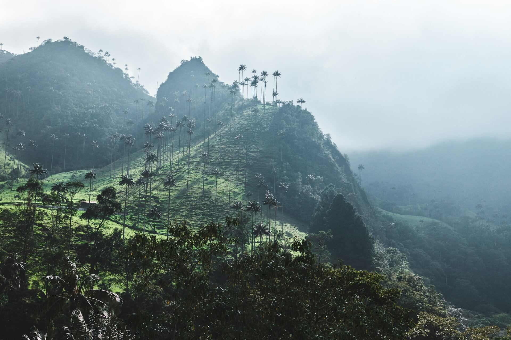
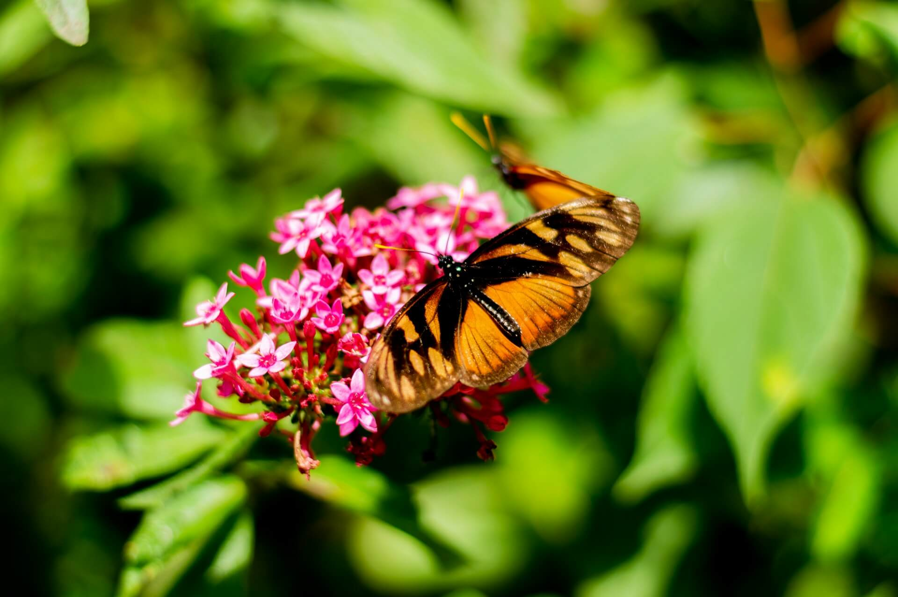
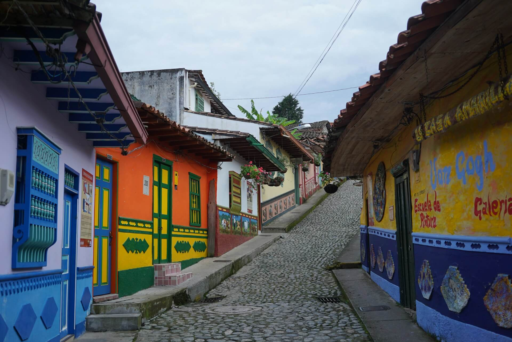

Colombia mágica
Descubre una cultura única
Elementos culturales
Naturaleza
La naturaleza colombiana, con su biodiversidad y paisajes imponentes, crea entornos donde lo cotidiano puede percibirse como extraordinario, reflejando una conexión profunda entre el entorno y la imaginación.

Símbolos
Elementos como las mariposas, la vegetación y las tradiciones culturales funcionan como símbolos que representan la identidad y la forma en que lo mágico se integra en la vida diaria.

Cultura
La cultura colombiana combina tradición, historia y percepción simbólica, permitiendo interpretar la realidad desde una perspectiva donde lo cotidiano adquiere un significado más profundo.
